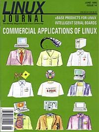

Shutdown Archive web server
Search:
Linux Journal
Issue #14/June 1995

Features
Introduction to Eiffel
by Dan Wilder
All four compilers for the new Eiffel language are available for Linux. Dan Wilder introduces us to the language.
Review: xBase Products for Linux
by Robert Broughton
Robert Broughton reviews two products, FlagShip and dBMAN, which provide xBase, the de-facto standard database language for PCs, on Linux.
Review: Intelligent Multiport Serial Boards
by Greg Hankins
Breg Hankins reviews four multi-port serial boards with Linux support.
News & Articles
Linux at the UW Computer Fair
Linux at Comdex/Fall: A Call for Participation
by Mark Bolzern
Interview with Mark Bolzern
Caldera and Corsair
Reviews
Product Review
SlickEdit
by Jeff Bauer
Book Review
Running Linux
by Grant Johnson
Columns
Letters to the Editor
Stop the Presses
by Phil Hughes
New Products
System Administration
Upgrading the Linux Kernel
by Mark Komarinski
Kernel Korner
The Linux Keyboard Driver
by Andries E. Brouwer
Archive Index
Shutdown Archive web server
Search:
Copyright © 1994 - 2018
Linux Journal
. All rights reserved.